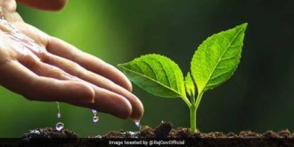
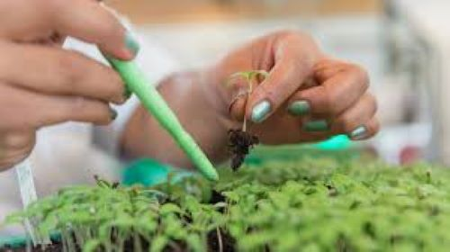
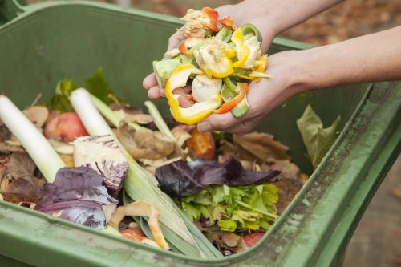
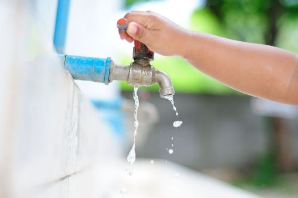

DROUGHT MANAGEMENT
|  | PlantationForests play an important role in mitigating climate change: They absorb carbon dioxide in the air, reduce the risk of floods, increase biodiversity and, as a new study in Europe now shows, reforestation can significantly increase rainfall and help stave off drought. |
|
Rainwater HarvestingConserves water: Rainwater harvesting helps to conserve water by capturing and storing rainwater for later use. This reduces the dependency on groundwater and surface water sources, which may be depleted during droughts. Replenishes groundwater: Rainwater harvesting can also help replenish groundwater levels. When rainwater is harvested and stored, it can be used for irrigation, which can help recharge the aquifers and prevent depletion of groundwater resources. Reduces flooding: During heavy rainfalls, rainwater can cause flooding and damage to infrastructure. Rainwater harvesting systems can help to reduce the amount of water that enters the drainage system, reducing the risk of flooding. Supports agricultural activities: Rainwater harvesting can help farmers to continue their agricultural activities during droughts. Stored rainwater can be used for irrigation, which can help crops survive during dry periods. Overall, rainwater harvesting can help to reduce the impact of droughts by conserving water, replenishing groundwater, reducing flooding, and supporting agricultural activities. |

|
|
.jpg) |
Desalination of WaterDesalination of water can help alleviate the effects of drought by providing a new source of fresh water that is not dependent on rainfall or other traditional water sources. In areas where there is a shortage of fresh water, desalination can be a valuable tool for meeting water demand. Desalination is the process of removing salt and other minerals from seawater or brackish water, making it suitable for drinking and other uses. This technology can be used to produce large quantities of fresh water from the ocean, which can be used to supplement or replace traditional sources of water. | |
Drip IrrigationDrip irrigation is a method of watering crops or plants that delivers water directly to the roots in small, measured amounts through a network of tubes or pipes with emitters. It is an efficient method of irrigation that can help conserve water and mitigate the effects of drought. Drip irrigation works by delivering water slowly and consistently to the roots of plants, which reduces evaporation and runoff. This means that less water is needed to irrigate crops, which helps conserve water in times of drought. Additionally, because the water is delivered directly to the roots, there is less moisture on the surface of the soil, which can help prevent the growth of weeds and reduce soil erosion. Overall, rainwater harvesting can help to reduce the impact of droughts by conserving water, replenishing groundwater, reducing flooding, and supporting agricultural activities. |
.jpg) |
|
|  | Genetically Modified CropsGenetically modified crops (GMOs) have been developed with a variety of traits that can help them better withstand drought conditions. One common trait that has been genetically engineered into crops is drought tolerance, which allows plants to survive and grow in conditions of limited water availability. Drought-tolerant GMOs achieve this through a variety of mechanisms, such as the ability to produce deeper root systems, increased water-use efficiency, and the ability to better regulate water loss through transpiration. These traits help crops maintain their productivity even when water availability is limited, which is particularly important in areas that are prone to drought or water scarcity. | |
Recycling Organic WasteRecycling organic waste can help mitigate the effects of drought in several ways. Organic waste, such as food scraps and yard waste, can be processed into compost, which is a nutrient-rich soil amendment that can help improve soil health and increase water retention in the soil. Compost is able to retain water better than regular soil, which means that plants grown in compost-amended soil are more resilient to drought conditions. This is because compost helps to improve soil structure, which allows water to penetrate more easily into the soil and also helps to reduce runoff and erosion. |
 | |
|  | Conserving WaterConserving water is essential during drought conditions as it helps to ensure that there is enough water for critical needs such as drinking, sanitation, and agriculture. Here are some ways that not wasting water can help during a drought: Reduce the overall demand for water: When people use less water, it reduces the overall demand for water. This can help to ensure that there is enough water to meet critical needs during a drought. Preserve water resources: By not wasting water, we can help to preserve water resources such as rivers, lakes, and groundwater. This can help to ensure that these resources are available during a drought. Reduce the need for water restrictions: If people conserve water during non-drought periods, it can help to reduce the need for water restrictions during a drought. This can help to minimize the impact of the drought on people and the environment. Save money: Conserving water can also help to save money on water bills. This can be especially important during a drought when the cost of water may increase due to high demand. In short, not wasting water can help to reduce the impact of droughts by conserving water resources and reducing overall demand, which can ensure that there is enough water for critical needs during a drought. |
.jpg)